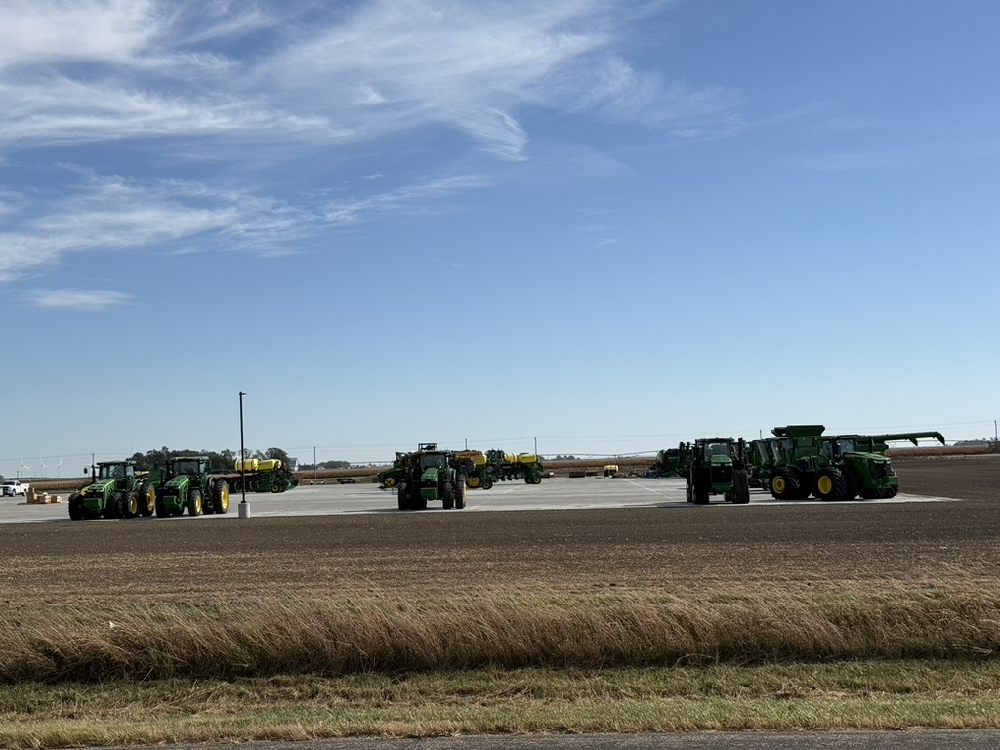
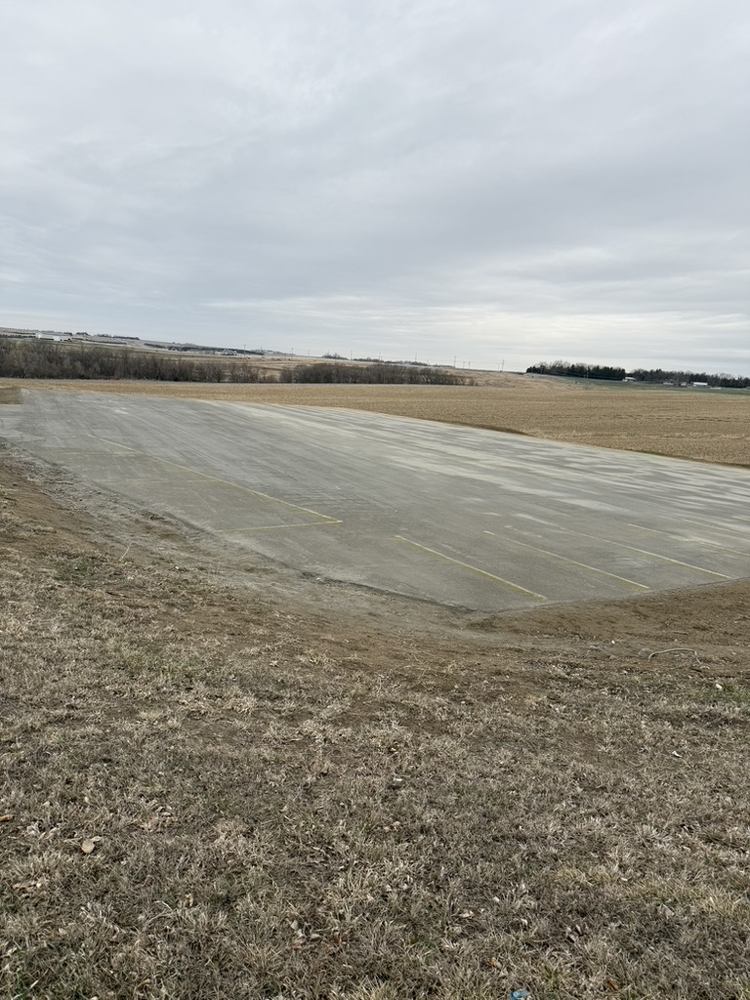

Fast, durable pavement for sites where trucks, equipment and uptime matter.
Plan a Commercial Project →RCC is suited to high-traffic commercial and industrial environments including commercial parking lots, distribution centers, equipment yards, loading docks and service roads.
RCC can support commercial sites that need durable pavement for vehicles, equipment and daily traffic.


We review vehicle types, traffic patterns, drainage and construction sequencing, then coordinate placement around your operating schedule.
Tell us the approximate size, use and location.
Request an Estimate →